Meddbase is a complex, multi-layered EMR system, capable of accommodating a wide variety of workflows and business models ranging from small practices, straightforward setup and only a couple of people using the application, through to global enterprises with thousands of users and nuanced workflows and business requirements.
Meddbase provides a high number of configuration options allowing the application to adapt to complex business scenarios, as well as a host of default settings that it can fall back on when complexity is minimal.
Meddbase can be and is used in Primary Care, Secondary Care as well as in Occupational Health.
This article is the 6th in a series of articles providing overview and details of setup and configuration steps required for Practice Management, which focuses on the application of the Meddbase system in Primary and Secondary Care.
This article will explain the following configuration aspects:
Once all configuration steps described in Practice Management Part 1 - 5 have been completed, subsequent steps can be taken to allow a patient to go through a consultation journey, i.e.:
Now that the chamber is set up, it's time to allow staff to log in and determine what they can and cannot do in the system.
In order to log into and use Meddbase, a person needs a User Account created and a License assigned.
A 'User' is the person who logs into the Meddbase application. Each user is assigned to Roles that enables them to carry out different activities.
Users are created by application administrators to assign their application permissions through Role Groups.
Each user also needs to exist in Meddbase as either a Clinician (Medical Person) or Non-Medical Staff which is then assigned to the user as their 'Assigned Account'. This can be done before creating their User account, or during that process.
Once a new 'User' is added, they can be assigned to various 'Roles', also referred to as 'Role Groups'. These Role Groups are useful to group users together that require the same permissions or require notifications for the same actions.
In Meddbase there is a set of built-in Role Groups, linked to various workflows, as well as the ability to create custom Role Groups.
To access User Management:
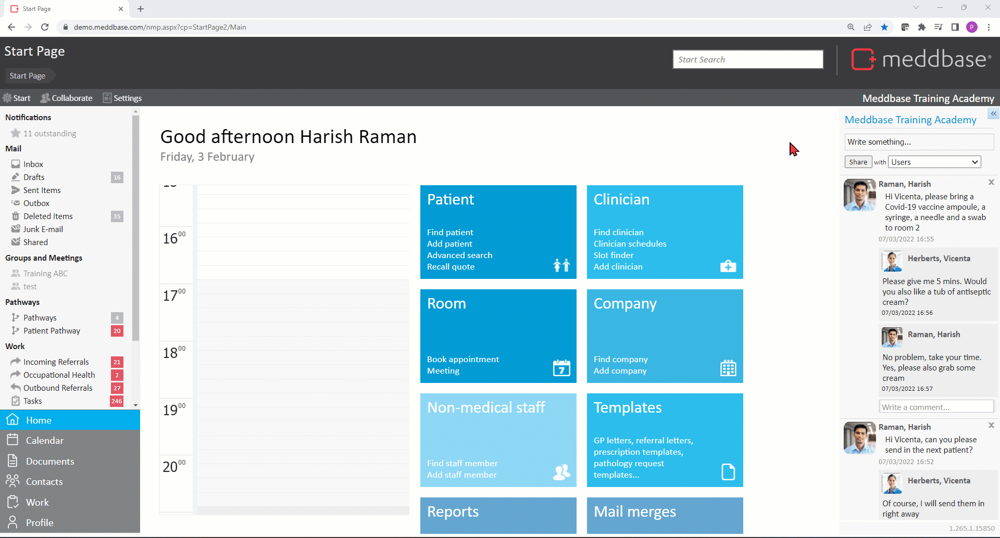
Click here for a detailed article on Creating/Adding Users.
Click here for a detailed article on Role Groups, related workflows and behaviours.
Once a new 'User' is added, they can be assigned to various 'Roles', also referred to as 'Role Groups'. These Role Groups are useful to group users together that require the same permissions or require notifications for the same actions.
In Meddbase there is a set of built-in Role Groups, linked to various workflows, as well as the ability to create custom Role Groups.
Click here for a detailed article on Role Groups, related workflows and behaviours.
Security Policies
Security Policies govern different aspects of data security in Meddbase. Each policy type (or certificate) governs a set of user permissions.
These permissions determine if/how users will be able to interact with data protected by a given policy or certificate, e.g. Company record protected by a Company Policy; Patient record protected by a Patient Policy.
Many permissions need to be used in conjunction with permissions governed by other certificates e.g. Company Certificate(s).
To access Security Policies:
Click here for an overview of Security Policies.
Company Certificate(s) govern/protect company records and determine users' ability to interact with these records.
Every Company has a Company Details page where you can find a Security section. The Policy dropdown allows selecting/changing the certificate.
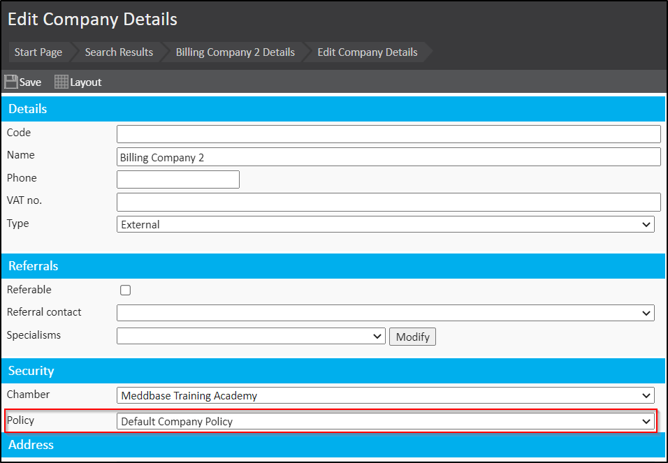
The chamber company's record (the clinic) is also governed/protected by a Company Certificate and many of the permissions described below determine users' access to functionality in Meddbase, as the chamber company owns the chamber.
Click here for a detailed article on the Permissions governed by the Company Certificate(s).
Document Certificate(s) govern/protect documents and templates and determine users' ability to interact with these documents/templates.
Every Document Type (Start Page > Templates) and individual Documents (Records - Patient, Company, Medical Person) has a Policy dropdown that allows selecting/changing the certificate.
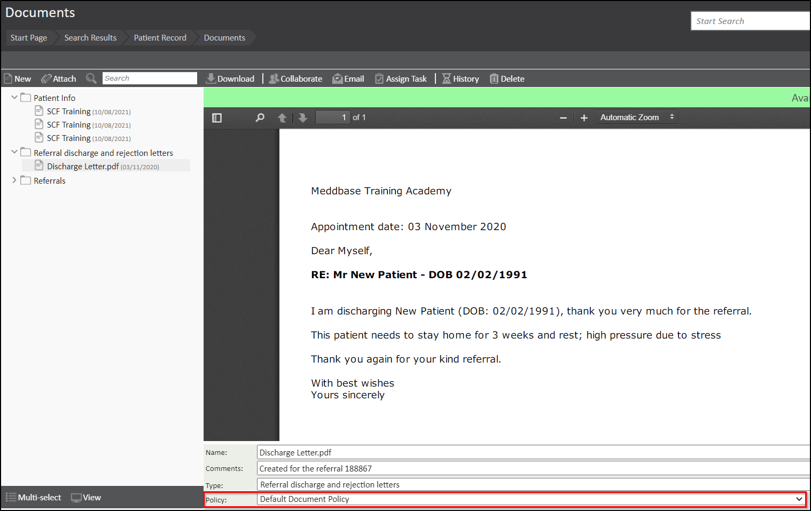
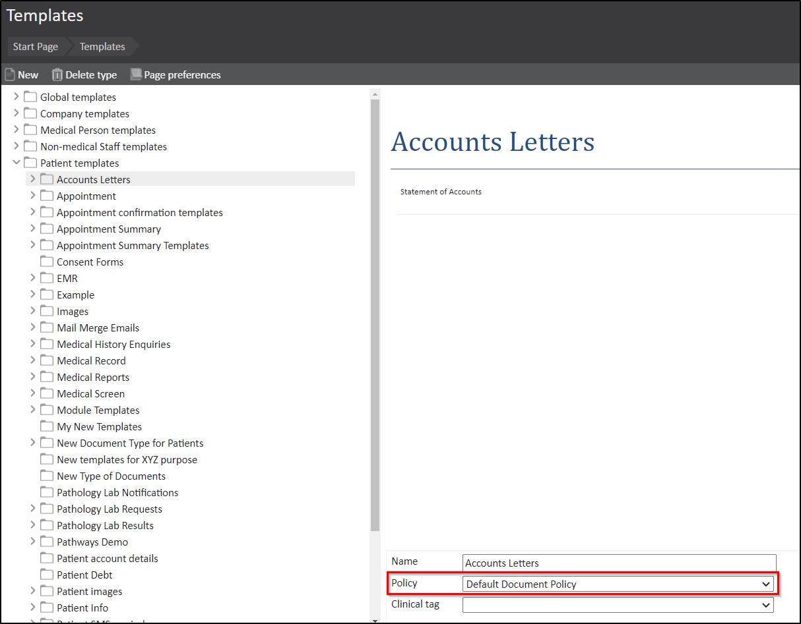
Medical Certificates
Meddbase provides the ability to split patient medical record (e.g. OH vs GP) by means of assigning separate Medical Certificates* to different Appointment Types, thus protecting the clinical notes, documents etc. captured/created during the respective appointment type. If Medical Certificate(s) are in use, a Meddbase user will have access to the part of the patient's medical record according to their permissions on the respective certificate(s).
*A Medical Certificate can be assigned to an Appointment Type, under Admin > Appointment Admin > Security > Medical Policy Applied, although this is not mandatory.
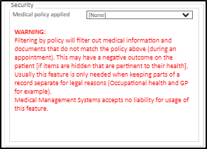
Click here for a detailed article on the Permissions governed by the Medical Certificate(s).
Click here for a detailed article on Split Medical Record.
Medical Person Certificate(s) govern/protect Medical Person (Clinician) records and determine users' ability to interact with these records (this includes the clinicians themselves).
Every Medical Person (Clinician) has a Personal Details page where you can find a Security section. The Policy dropdown allows selecting/changing the certificate.
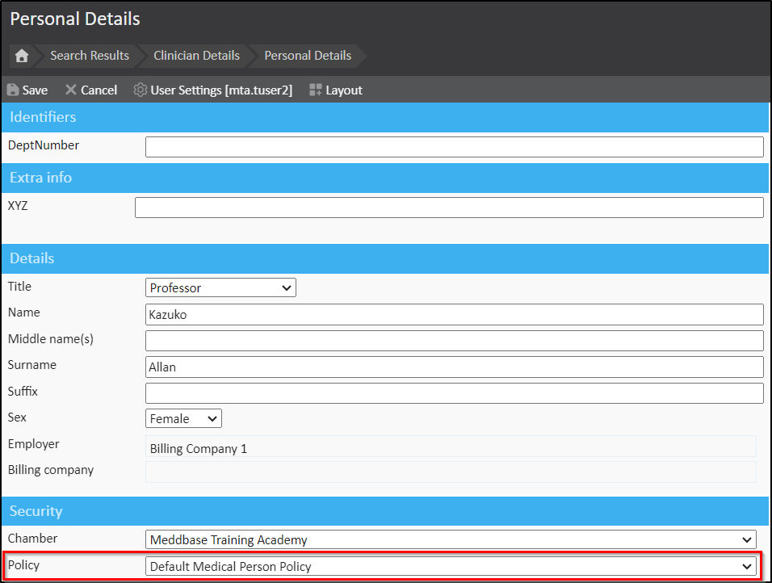
Click here for a detailed article on the Permissions governed by the Medical Person Certificate(s).
Non-Medical Person Certificate(s) govern/protect Non-medical staff (non-clinician) records and determine users' ability to interact with these records (this includes the clinicians themselves).
Every Non-medical staff person (non-clinician) has a Personal Details page where you can find a Details section. The Policy dropdown allows selecting/changing the certificate.
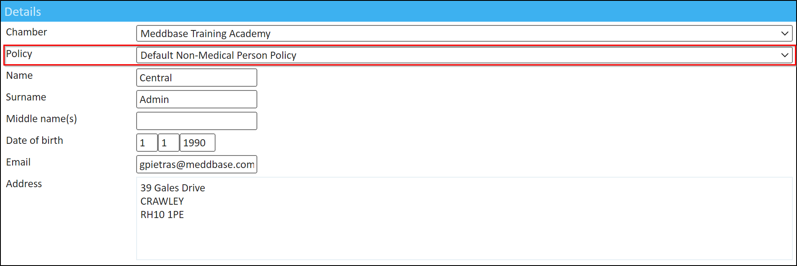
Click here for a detailed article on the Permissions governed by the Non-Medical Person Certificate(s).
Click here for a detailed article on adding a Non-Medical staff member.
Pathways in Meddbase provide a rich range of capabilities. They enable the setup of workflows made up of a series of steps where actions are carried out.
Furthermore, some Pathway features and use cases allow patients to interact directly with the Pathway via the Patient Portal.
The Pathway Certificate(s) governs users' ability to interact with Pathways.
New Pathways can be created*/existing Pathways can be edited in Admin > Common Catalogues > Pathways. The Policy dropdown allows selecting/changing the certificate.
*It’s a good idea to get in contact with us to help understand your requirements to see how we can help you build the Pathway you need. You can either Submit a request to the Support team or contact our customer account management team.
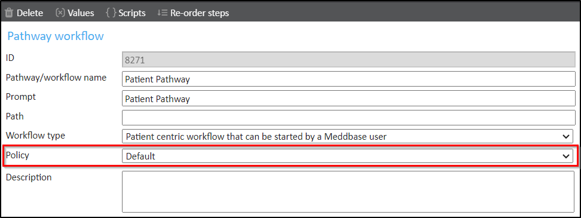
Click here for a detailed article on Understanding Pathways.
Click here for a detailed article on How can Patients interact with Pathways.
Patient Certificate(s) govern/protect Patient records and determine users' ability to interact with these records.
Every Patient has a Personal Details page where you can find a Security section. The Policy dropdown allows selecting/changing the certificate.
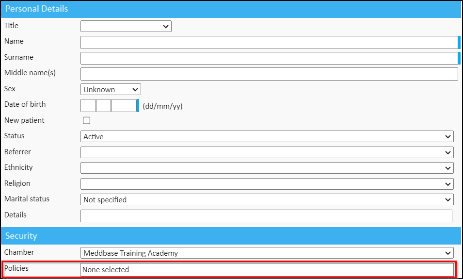
Click here for a detailed article on the Permissions governed by the Patient Certificate(s).
Stock Control is a system feature that can be used to manage stock within Meddbase.
Stock Control Certificate(s) govern/protect Stock Definitions and determine users' ability to interact with these Stock Definitions.
New Stock Definitions can be created*/existing Stock Definitions can be edited in Admin > Common Catalogues > Stock Definitions. The Policy dropdown allows selecting/changing the certificate.
*This step is part of a larger setup of the Stock Control feature. Click here for a detailed article.
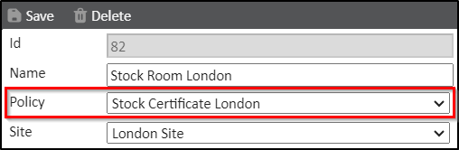
This feature allows for Clinicians to have restricted views of the other clinicians in the chamber while having full access to their own personal record*.
This will also prevent Clinicians from viewing each other's appointments and diaries, while still allowing access to any medical history recorded on a patient record.
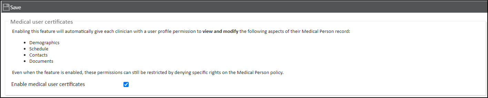
Click here for a detailed article.
*Even when the feature is enabled, these permissions can still be restricted by denying specific rights on the Medical Person policy.
Meddbase enables a high level of patient data security by assigning a patient record to a Patient Certificate, which will determine how users can interact with the record in question.
You can configure multiple Patient Certificates to assign to different types of patients, e.g. General Public, RAF Pilots, Government MPs etc. and specific users or groups of users may only have permissions on one of the certificates, and thus only interact with a given patient type.
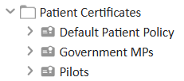
The Combined Patient Policy feature then allows a patient's record to be assigned to multiple Patient Certificates simultaneously, which assists with governance of access to patient data.
The Combined Patient Policies feature is also required to enable the Patient Directory Search feature.
The Patient Directory Search feature is an enhancement of the Patient Search available on the Meddbase Start Page. The Patient Directory Search feature helps to ensure appropriate access to patient records within an organisation i.e. within a single chamber or in case of larger organisations, access to patient records between chambers linked in a network.
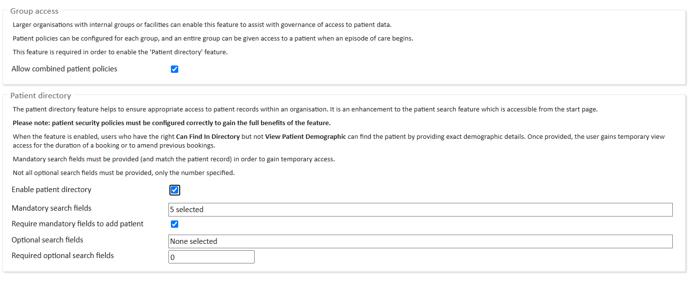
Click here for a detailed article on Combined Patient Policies.
Click here for a detailed article on the Patient Directory.
In order to increase the security features of your system and minimise the risk of passwords becoming compromised Meddbase features a range of password policy options:
*The standard English punctuation is as follows: period, comma, apostrophe, quotation, question, exclamation, brackets, braces, parenthesis, dash, hyphen, ellipsis, colon, semicolon.
To be able to book appointments with a Clinician, at least one session needs to be created in the Clinician's Site Scheduler.
Click here for a detailed article on Creating and updating Clinician Schedules.
Click here for a detailed article on Session Templates.